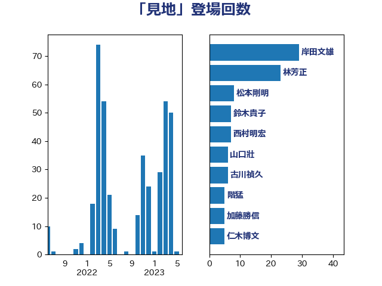

単語「見地」

| 岸田文雄 | 自由民主党 | 29 回 |
| 林芳正 | 自由民主党 | 23 回 |
| 松本剛明 | 自由民主党 | 8 回 |
| 鈴木貴子 | 自由民主党 | 7 回 |
| 西村明宏 | 自由民主党 | 7 回 |
| 山口壯 | 自由民主党 | 6 回 |
| 古川禎久 | 自由民主党 | 6 回 |
| 階猛 | 立憲民主党 | 5 回 |
| 加藤勝信 | 自由民主党 | 5 回 |
| 仁木博文 | 無所属 | 5 回 |
| 辻元清美 | 立憲民主党 | 4 回 |
| 赤澤亮正 | 自由民主党 | 4 回 |
| 西村康稔 | 自由民主党 | 4 回 |
| 石井苗子 | 日本維新の会 | 4 回 |
| 後藤茂之 | 自由民主党 | 4 回 |
| 佐々木さやか | 公明党 | 4 回 |
| 鈴木宗男 | 日本維新の会 | 3 回 |
| 美延映夫 | 日本維新の会 | 3 回 |
| 稲津久 | 公明党 | 3 回 |
| 田中健 | 国民民主党 | 3 回 |
| 安江伸夫 | 公明党 | 3 回 |
| 太栄志 | 立憲民主党 | 3 回 |
| 井出庸生 | 自由民主党 | 3 回 |
| 中川正春 | 立憲民主党 | 3 回 |
| 齋藤健 | 自由民主党 | 2 回 |
| 高良鉄美 | 無所属 | 2 回 |
| 音喜多駿 | 日本維新の会 | 2 回 |
| 鈴木淳司 | 自由民主党 | 2 回 |
| 萩生田光一 | 自由民主党 | 2 回 |
| 芳賀道也 | 国民民主党 | 2 回 |
| 田村憲久 | 自由民主党 | 2 回 |
| 田村まみ | 国民民主党 | 2 回 |
| 沢田良 | 日本維新の会 | 2 回 |
| 杉尾秀哉 | 立憲民主党 | 2 回 |
| 日下正喜 | 公明党 | 2 回 |
| 打越さく良 | 立憲民主党 | 2 回 |
| 川田龍平 | 立憲民主党 | 2 回 |
| 宮崎政久 | 自由民主党 | 2 回 |
| 守島正 | 日本維新の会 | 2 回 |
| 大岡敏孝 | 自由民主党 | 2 回 |
| 國重徹 | 公明党 | 2 回 |
| 古賀友一郎 | 自由民主党 | 2 回 |
| 北神圭朗 | 無所属 | 2 回 |
| 佐藤英道 | 公明党 | 2 回 |
| 仁比聡平 | 日本共産党 | 2 回 |
| 中谷一馬 | 立憲民主党 | 2 回 |
| 中西祐介 | 自由民主党 | 2 回 |
| 鰐淵洋子 | 公明党 | 1 回 |
| 鬼木誠 | 立憲民主党 | 1 回 |
| 高階恵美子 | 自由民主党 | 1 回 |
| 青木愛 | 立憲民主党 | 1 回 |
| 阿部弘樹 | 日本維新の会 | 1 回 |
| 阿部司 | 日本維新の会 | 1 回 |
| 門山宏哲 | 自由民主党 | 1 回 |
| 鎌田さゆり | 立憲民主党 | 1 回 |
| 鈴木英敬 | 自由民主党 | 1 回 |
| 鈴木庸介 | 立憲民主党 | 1 回 |
| 金村龍那 | 日本維新の会 | 1 回 |
| 金子恭之 | 自由民主党 | 1 回 |
| 野田国義 | 立憲民主党 | 1 回 |
| 足立康史 | 日本維新の会 | 1 回 |
| 西銘恒三郎 | 自由民主党 | 1 回 |
| 西村智奈美 | 立憲民主党 | 1 回 |
| 西岡秀子 | 国民民主党 | 1 回 |
| 藤巻健太 | 日本維新の会 | 1 回 |
| 若宮健嗣 | 自由民主党 | 1 回 |
| 緑川貴士 | 立憲民主党 | 1 回 |
| 簗和生 | 自由民主党 | 1 回 |
| 竹詰仁 | 国民民主党 | 1 回 |
| 稲田朋美 | 自由民主党 | 1 回 |
| 福重隆浩 | 公明党 | 1 回 |
| 福島みずほ | 社会民主党 | 1 回 |
| 神谷裕 | 立憲民主党 | 1 回 |
| 石橋通宏 | 立憲民主党 | 1 回 |
| 石川昭政 | 自由民主党 | 1 回 |
| 石原正敬 | 自由民主党 | 1 回 |
| 牧野たかお | 自由民主党 | 1 回 |
| 牧山ひろえ | 立憲民主党 | 1 回 |
| 池畑浩太朗 | 日本維新の会 | 1 回 |
| 池下卓 | 日本維新の会 | 1 回 |
| 永岡桂子 | 自由民主党 | 1 回 |
| 水岡俊一 | 立憲民主党 | 1 回 |
| 武部新 | 自由民主党 | 1 回 |
| 武見敬三 | 自由民主党 | 1 回 |
| 武田良太 | 自由民主党 | 1 回 |
| 森英介 | 自由民主党 | 1 回 |
| 森屋隆 | 立憲民主党 | 1 回 |
| 柴愼一 | 立憲民主党 | 1 回 |
| 枝野幸男 | 立憲民主党 | 1 回 |
| 松野博一 | 自由民主党 | 1 回 |
| 杉本和巳 | 日本維新の会 | 1 回 |
| 本村伸子 | 日本共産党 | 1 回 |
| 末松信介 | 自由民主党 | 1 回 |
| 新藤義孝 | 自由民主党 | 1 回 |
| 斉藤鉄夫 | 公明党 | 1 回 |
| 徳永エリ | 立憲民主党 | 1 回 |
| 川合孝典 | 国民民主党 | 1 回 |
| 岡田直樹 | 自由民主党 | 1 回 |
| 山田勝彦 | 立憲民主党 | 1 回 |
| 山岡達丸 | 立憲民主党 | 1 回 |
| 尾身朝子 | 自由民主党 | 1 回 |
| 小西洋之 | 立憲民主党 | 1 回 |
| 小林茂樹 | 自由民主党 | 1 回 |
| 小林一大 | 自由民主党 | 1 回 |
| 小倉將信 | 自由民主党 | 1 回 |
| 寺田稔 | 自由民主党 | 1 回 |
| 宮本岳志 | 日本共産党 | 1 回 |
| 宮崎勝 | 公明党 | 1 回 |
| 奥下剛光 | 日本維新の会 | 1 回 |
| 大河原まさこ | 立憲民主党 | 1 回 |
| 塩崎彰久 | 自由民主党 | 1 回 |
| 城井崇 | 立憲民主党 | 1 回 |
| 土屋品子 | 自由民主党 | 1 回 |
| 吉田統彦 | 立憲民主党 | 1 回 |
| 吉田とも代 | 日本維新の会 | 1 回 |
| 吉川赳 | 無所属 | 1 回 |
| 吉井章 | 自由民主党 | 1 回 |
| 勝部賢志 | 立憲民主党 | 1 回 |
| 前原誠司 | 国民民主党 | 1 回 |
| 冨樫博之 | 自由民主党 | 1 回 |
| 倉林明子 | 日本共産党 | 1 回 |
| 佐藤啓 | 自由民主党 | 1 回 |
| 伊藤俊輔 | 立憲民主党 | 1 回 |
| 伊東良孝 | 自由民主党 | 1 回 |
| 井上哲士 | 日本共産党 | 1 回 |
| 串田誠一 | 日本維新の会 | 1 回 |
| 中野洋昌 | 公明党 | 1 回 |
| 中谷真一 | 自由民主党 | 1 回 |
| 中村裕之 | 自由民主党 | 1 回 |
| 中川康洋 | 公明党 | 1 回 |
| 中川宏昌 | 公明党 | 1 回 |
| 中島克仁 | 立憲民主党 | 1 回 |
| たがや亮 | れいわ新選組 | 1 回 |